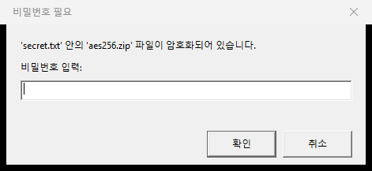
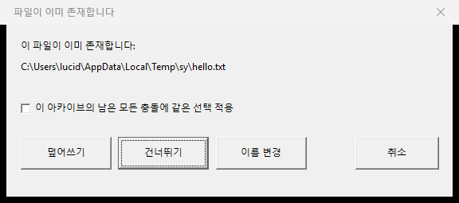

OpenZip
한국어 ZIP을 깨짐 없이 다루는 가벼운 Windows 압축/해제기 A minimal Windows ZIP utility that gets Korean filenames right.
기능 Features
한국어 파일명 정확Correct Korean filenames
CP949 / UTF-8 자동 감지. 옛날 ZIP도 깨짐 없음. Robust CP949/UTF-8 detection. No mojibake.
탐색기 우클릭 통합Explorer right-click
Win11 모던 메뉴 + Win10 클래식 메뉴 모두 지원. 압축·해제·옵션 한자리. Win11 modern + Win10 classic menus. Extract, compress, options — all in place.
미리보기 다이얼로그Browser dialog
.zip 더블클릭 시 파일/폴더 목록 + 시스템 아이콘. 더블클릭으로 폴더 탐색, 한 파일만 추출도 가능. Double-click a .zip to browse contents with shell icons. Drill into folders, extract one file or a selection.
AES-256 암호화AES-256 encryption
읽기는 ZipCrypto · AES-256 모두 지원. 새로 만들 땐 비밀번호 입력 시 AES-256. Reads ZipCrypto + AES-256; writes AES-256 when a password is set.
다크 모드Dark mode
Win11 다크 테마를 모든 다이얼로그가 따라감. All dialogs follow the OS dark theme on Win11.
안전 + 가벼움Safe & lean
Zip-slip · 심볼릭 링크 · 압축 폭탄 방어. 광고·텔레메트리·자동 업데이트 없음. Zip-slip, symlink, decompression-bomb protections. No ads, no telemetry, no auto-update.
스크린샷 Screenshots




시스템 요구사항 Requirements
Windows 10 1903 (build 18362) 이상 또는 Windows 11. x64 전용. Windows 10 1903 (build 18362) or later, or Windows 11. x64 only.
Microsoft Store 설치는 자동 업데이트와 코드 서명이 함께 처리됩니다. 사이드로드 설치는 GitHub Releases의 .msix를 받아서:
Microsoft Store install handles signing and updates. For sideload, grab the .msix from GitHub Releases and:
Add-AppxPackage .\OpenZip_0.3.0.msix
설치 후 탐색기에서 .zip 파일 우클릭 또는 파일·폴더 우클릭 → "OpenZip" 메뉴. After install, right-click any .zip file (or any file/folder) and pick the "OpenZip" submenu.